library(stochtree)
library(ggplot2)
library(coda)
library(bayesplot)
library(foreach)
library(doParallel)Running and Combining Multiple MCMC Chains
Motivation
Mixing of an MCMC sampler is a perennial concern for complex Bayesian models. BART and BCF are no exception. One common way to address such concerns is to run multiple independent “chains” of an MCMC sampler, so that if each chain gets stuck in a different region of the posterior, their combined samples attain better coverage of the full posterior.
This idea works with the classic “root-initialized” MCMC sampler of Chipman et al. (2010), but a key insight of He and Hahn (2023) and Krantsevich et al. (2023) is that the GFR algorithm may be used to warm-start initialize multiple chains of the BART / BCF MCMC sampler.
Operationally, the above two approaches have the same implementation (setting num_gfr > 0 if warm-start initialization is desired), so this vignette will demonstrate how to run a multi-chain sampler sequentially or in parallel.
Setup
import numpy as np
import matplotlib.pyplot as plt
import arviz as az
from stochtree import BARTModel
rng = np.random.default_rng(1111)Demo 1: Supervised Learning
Data Simulation
Simulate a simple partitioned linear model.
# Generate the data
set.seed(1111)
n <- 500
p_x <- 10
p_w <- 1
snr <- 3
X <- matrix(runif(n * p_x), ncol = p_x)
leaf_basis <- matrix(runif(n * p_w), ncol = p_w)
f_XW <- (((0 <= X[, 1]) & (0.25 > X[, 1])) *
(-7.5 * leaf_basis[, 1]) +
((0.25 <= X[, 1]) & (0.5 > X[, 1])) * (-2.5 * leaf_basis[, 1]) +
((0.5 <= X[, 1]) & (0.75 > X[, 1])) * (2.5 * leaf_basis[, 1]) +
((0.75 <= X[, 1]) & (1 > X[, 1])) * (7.5 * leaf_basis[, 1]))
noise_sd <- sd(f_XW) / snr
y <- f_XW + rnorm(n, 0, 1) * noise_sd
# Split data into test and train sets
test_set_pct <- 0.2
n_test <- round(test_set_pct * n)
n_train <- n - n_test
test_inds <- sort(sample(1:n, n_test, replace = FALSE))
train_inds <- (1:n)[!((1:n) %in% test_inds)]
X_test <- X[test_inds, ]
X_train <- X[train_inds, ]
leaf_basis_test <- leaf_basis[test_inds, ]
leaf_basis_train <- leaf_basis[train_inds, ]
y_test <- y[test_inds]
y_train <- y[train_inds]n, p_x, p_w, snr = 500, 10, 1, 3
X = rng.uniform(size=(n, p_x))
leaf_basis = rng.uniform(size=(n, p_w))
f_XW = (((0 <= X[:, 0]) & (0.25 > X[:, 0])) * (-7.5 * leaf_basis[:, 0]) +
((0.25 <= X[:, 0]) & (0.5 > X[:, 0])) * (-2.5 * leaf_basis[:, 0]) +
((0.5 <= X[:, 0]) & (0.75 > X[:, 0])) * (2.5 * leaf_basis[:, 0]) +
((0.75 <= X[:, 0]) & (1 > X[:, 0])) * (7.5 * leaf_basis[:, 0]))
noise_sd = np.std(f_XW) / snr
y = f_XW + rng.normal(0, noise_sd, size=n)
test_set_pct = 0.2
n_test = round(test_set_pct * n)
test_inds = rng.choice(n, n_test, replace=False)
train_inds = np.setdiff1d(np.arange(n), test_inds)
X_test, X_train = X[test_inds], X[train_inds]
leaf_basis_test, leaf_basis_train = leaf_basis[test_inds], leaf_basis[train_inds]
y_test, y_train = y[test_inds], y[train_inds]Sampling Multiple Chains Sequentially from Scratch
The simplest way to sample multiple chains of a stochtree model is to do so “sequentially,” that is, after chain 1 is sampled, chain 2 is sampled from a different starting state, and similarly for each of the requested chains. This is supported internally in both the bart() and bcf() functions, with the num_chains parameter in the general_params list.
Define some high-level parameters, including number of chains to run and number of samples per chain. Here we run 4 independent chains with 2000 MCMC iterations, each of which is burned in for 1000 iterations.
num_chains <- 4
num_gfr <- 0
num_burnin <- 1000
num_mcmc <- 2000num_chains = 4
num_gfr = 0
num_burnin = 1000
num_mcmc = 2000Run the sampler.
bart_model <- stochtree::bart(
X_train = X_train,
leaf_basis_train = leaf_basis_train,
y_train = y_train,
num_gfr = num_gfr,
num_burnin = num_burnin,
num_mcmc = num_mcmc,
general_params = list(num_chains = num_chains)
)bart_model = BARTModel()
bart_model.sample(
X_train=X_train, leaf_basis_train=leaf_basis_train, y_train=y_train,
num_gfr=num_gfr, num_burnin=num_burnin, num_mcmc=num_mcmc,
general_params={"num_threads": 1, "num_chains": num_chains},
)Now we have a model with num_chains * num_mcmc samples stored internally. These samples are arranged sequentially, with the first num_mcmc samples corresponding to chain 1, the next num_mcmc samples to chain 2, etc.
Since each chain is a set of samples of the same model, we can analyze the samples collectively, for example, by looking at out-of-sample predictions.
y_hat_test <- predict(
bart_model,
X = X_test,
leaf_basis = leaf_basis_test,
type = "mean",
terms = "y_hat"
)
plot(y_hat_test, y_test, xlab = "Predicted", ylab = "Actual")
abline(0, 1, col = "red", lty = 3, lwd = 3)y_hat_test = bart_model.predict(
X=X_test, leaf_basis=leaf_basis_test, type="mean", terms="y_hat"
)
lo, hi = min(y_hat_test.min(), y_test.min()), max(y_hat_test.max(), y_test.max())
plt.scatter(y_hat_test, y_test, alpha=0.5)
plt.plot([lo, hi], [lo, hi], color="red", linestyle="dashed", linewidth=2)
plt.xlabel("Predicted"); plt.ylabel("Actual")
plt.show()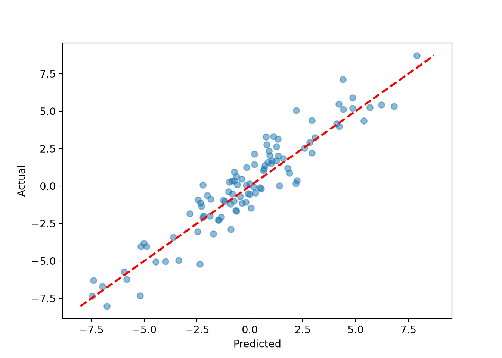
Now, suppose we want to analyze each of the chains separately to assess mixing / convergence. We can construct an mcmc.list in the coda package to perform various diagnostics.
sigma2_coda_list <- coda::as.mcmc.list(lapply(
1:num_chains,
function(chain_idx) {
offset <- (chain_idx - 1) * num_mcmc
inds_start <- offset + 1
inds_end <- offset + num_mcmc
coda::mcmc(bart_model$sigma2_global_samples[inds_start:inds_end])
}
))
traceplot(sigma2_coda_list, ylab = expression(sigma^2))
abline(h = noise_sd^2, col = "black", lty = 3, lwd = 3)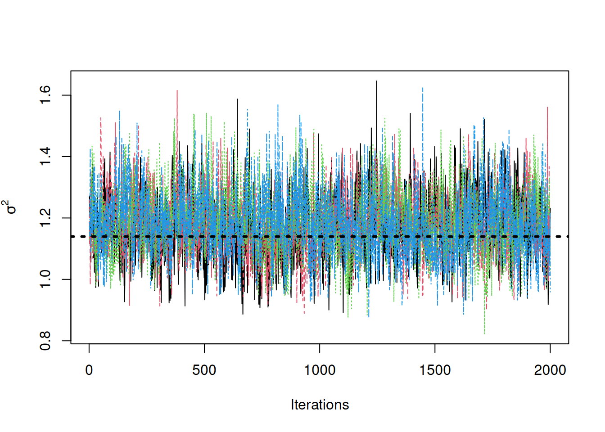
acf <- autocorr.diag(sigma2_coda_list)
ess <- effectiveSize(sigma2_coda_list)
rhat <- gelman.diag(sigma2_coda_list, autoburnin = F)
cat(paste0(
"Average autocorrelation across chains:\n",
paste0(paste0(rownames(acf), ": ", round(acf, 3)), collapse = ", "),
"\nTotal effective sample size across chains: ",
paste0(round(ess, 1), collapse = ", "),
"\n'R-hat' potential scale reduction factor of Gelman and Rubin (1992)): ",
paste0(round(rhat$psrf[, 1], 3), collapse = ", ")
))Average autocorrelation across chains:
Lag 0: 1, Lag 1: 0.348, Lag 5: 0.127, Lag 10: 0.062, Lag 50: 0.019
Total effective sample size across chains: 1773.4
'R-hat' potential scale reduction factor of Gelman and Rubin (1992)): 1.01# Reshape flat sigma2 samples into (num_chains, num_mcmc) for per-chain diagnostics
# az.from_dict requires nested dict: {"posterior": {"var": array(chains, draws)}}
idata = az.from_dict({"posterior": {"sigma2": bart_model.global_var_samples.reshape(num_chains, num_mcmc)}})
az.plot_trace(idata)plt.axhline(noise_sd**2, color="black", linestyle="dashed", linewidth=1.5)
plt.show()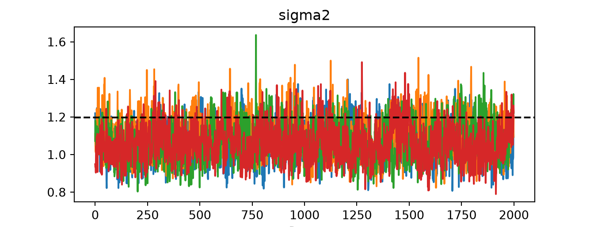
print("ESS: ", az.ess(idata))ESS: <xarray.DataTree 'posterior'>
Group: /posterior
Dimensions: ()
Data variables:
sigma2 float64 8B 334.0print("R-hat:", az.rhat(idata))R-hat: <xarray.DataTree 'posterior'>
Group: /posterior
Dimensions: ()
Data variables:
sigma2 float64 8B 1.011az.plot_autocorr(idata)plt.show()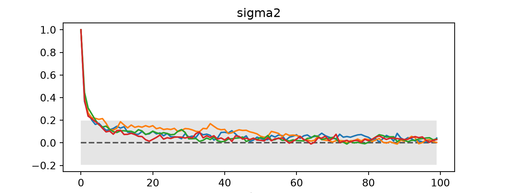
We can convert this to an array to be consumed by the bayesplot package.
coda_array <- as.array(sigma2_coda_list)
dim(coda_array) <- c(nrow(coda_array), ncol(coda_array), 1)
dimnames(coda_array) <- list(
Iteration = paste0("iter", 1:num_mcmc),
Chain = paste0("chain", 1:num_chains),
Parameter = "sigma2_global"
)# sigma2_by_chain already has shape (num_chains, num_mcmc) — ready for per-chain plots
sigma2_chains = bart_model.global_var_samples.reshape(num_chains, num_mcmc)From here, we can visualize the posterior of \(\sigma^2\) for each chain, comparing to the true simulated value.
bayesplot::mcmc_hist_by_chain(
coda_array,
pars = "sigma2_global"
) +
ggplot2::labs(
title = "Global error scale posterior by chain",
x = expression(sigma^2)
) +
ggplot2::theme(
plot.title = ggplot2::element_text(hjust = 0.5)
) +
ggplot2::geom_vline(
xintercept = noise_sd^2,
color = "black",
linetype = "dashed",
size = 1
)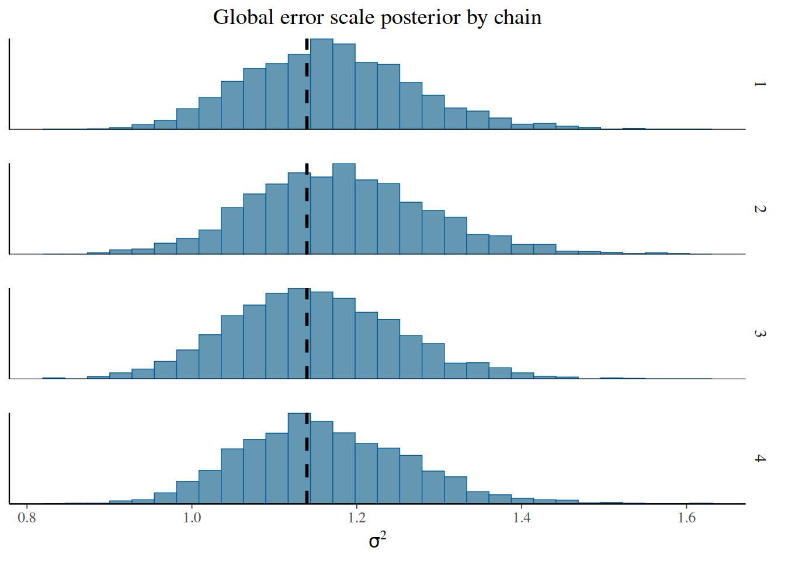
fig, axes = plt.subplots(1, num_chains, figsize=(12, 3), sharey=True)
for i, ax in enumerate(axes):
ax.hist(sigma2_chains[i], bins=30)
ax.axvline(noise_sd**2, color="black", linestyle="dashed", linewidth=1.5)
ax.set_title(f"Chain {i+1}")
ax.set_xlabel(r"$\sigma^2$")
fig.suptitle("Global error scale posterior by chain")
plt.tight_layout()
plt.show()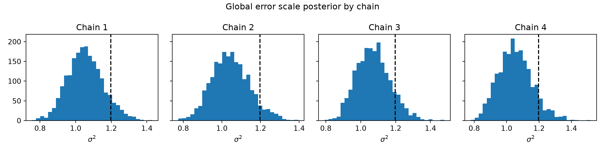
Sampling Multiple Chains Sequentially from XBART Forests
In the example above, each chain was initialized from “root”. If we sample a model using a small number of ‘grow-from-root’ iterations, we can use these forests to initialize MCMC chains.
num_chains <- 4
num_gfr <- 5
num_burnin <- 1000
num_mcmc <- 2000num_chains = 4
num_gfr = 5
num_burnin = 1000
num_mcmc = 2000Run the initial GFR sampler.
xbart_model <- stochtree::bart(
X_train = X_train,
leaf_basis_train = leaf_basis_train,
y_train = y_train,
num_gfr = num_gfr,
num_burnin = 0,
num_mcmc = 0
)
xbart_model_string <- stochtree::saveBARTModelToJsonString(xbart_model)xbart_model = BARTModel()
xbart_model.sample(
X_train=X_train, leaf_basis_train=leaf_basis_train, y_train=y_train,
num_gfr=num_gfr, num_burnin=0, num_mcmc=0,
general_params={"num_threads": 1},
)
xbart_model_json = xbart_model.to_json()Run the multi-chain BART sampler, with each chain initialized from a different GFR forest.
bart_model <- stochtree::bart(
X_train = X_train,
leaf_basis_train = leaf_basis_train,
y_train = y_train,
num_gfr = num_gfr,
num_burnin = num_burnin,
num_mcmc = num_mcmc,
general_params = list(num_chains = num_chains),
previous_model_json = xbart_model_string,
previous_model_warmstart_sample_num = num_gfr
)bart_model = BARTModel()
bart_model.sample(
X_train=X_train, leaf_basis_train=leaf_basis_train, y_train=y_train,
num_gfr=0, num_burnin=num_burnin, num_mcmc=num_mcmc,
general_params={"num_threads": 1, "num_chains": num_chains},
previous_model_json=xbart_model_json,
previous_model_warmstart_sample_num=num_gfr - 1, # 0-indexed
)y_hat_test <- predict(
bart_model,
X = X_test,
leaf_basis = leaf_basis_test,
type = "mean",
terms = "y_hat"
)
plot(y_hat_test, y_test, xlab = "Predicted", ylab = "Actual")
abline(0, 1, col = "red", lty = 3, lwd = 3)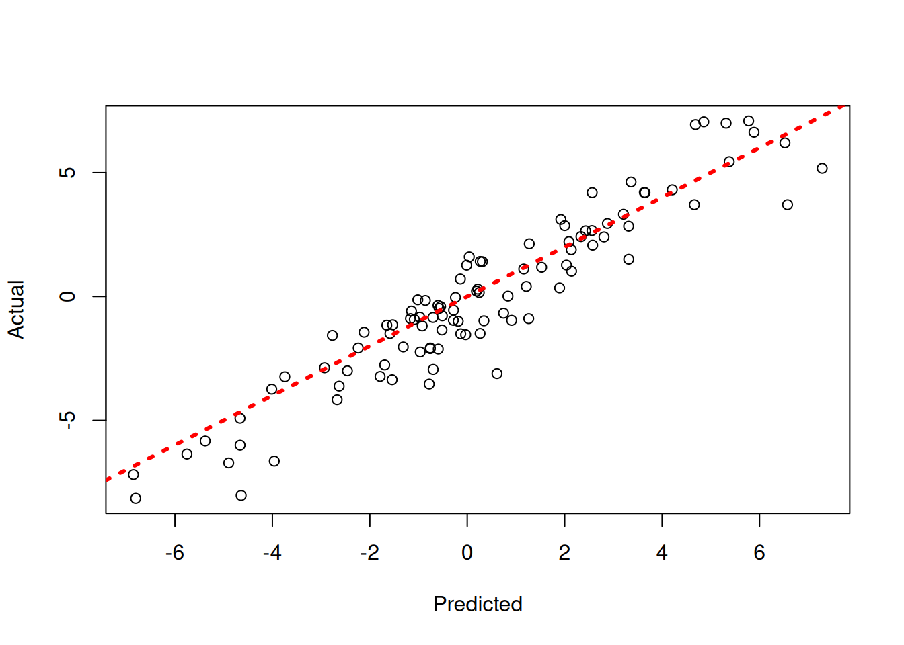
y_hat_test = bart_model.predict(
X=X_test, leaf_basis=leaf_basis_test, type="mean", terms="y_hat"
)
lo, hi = min(y_hat_test.min(), y_test.min()), max(y_hat_test.max(), y_test.max())
plt.scatter(y_hat_test, y_test, alpha=0.5)
plt.plot([lo, hi], [lo, hi], color="red", linestyle="dashed", linewidth=2)
plt.xlabel("Predicted"); plt.ylabel("Actual")
plt.show()sigma2_coda_list <- coda::as.mcmc.list(lapply(
1:num_chains,
function(chain_idx) {
offset <- (chain_idx - 1) * num_mcmc
inds_start <- offset + 1
inds_end <- offset + num_mcmc
coda::mcmc(bart_model$sigma2_global_samples[inds_start:inds_end])
}
))
traceplot(sigma2_coda_list, ylab = expression(sigma^2))
abline(h = noise_sd^2, col = "black", lty = 3, lwd = 3)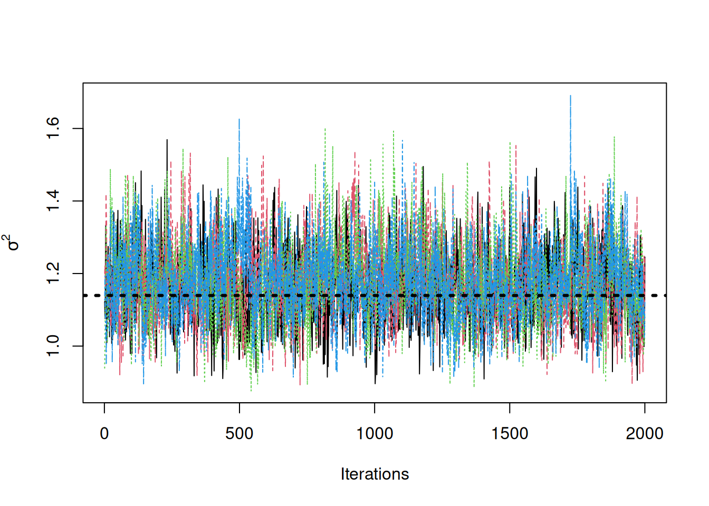
acf <- autocorr.diag(sigma2_coda_list)
ess <- effectiveSize(sigma2_coda_list)
rhat <- gelman.diag(sigma2_coda_list, autoburnin = F)
cat(paste0(
"Average autocorrelation across chains:\n",
paste0(paste0(rownames(acf), ": ", round(acf, 3)), collapse = ", "),
"\nTotal effective sample size across chains: ",
paste0(round(ess, 1), collapse = ", "),
"\n'R-hat' potential scale reduction factor of Gelman and Rubin (1992)): ",
paste0(round(rhat$psrf[, 1], 3), collapse = ", ")
))Average autocorrelation across chains:
Lag 0: 1, Lag 1: 0.39, Lag 5: 0.16, Lag 10: 0.13, Lag 50: 0.016
Total effective sample size across chains: 1290.7
'R-hat' potential scale reduction factor of Gelman and Rubin (1992)): 1.008idata = az.from_dict({"posterior": {"sigma2": bart_model.global_var_samples.reshape(num_chains, num_mcmc)}})
az.plot_trace(idata)plt.axhline(noise_sd**2, color="black", linestyle="dashed", linewidth=1.5)
plt.show()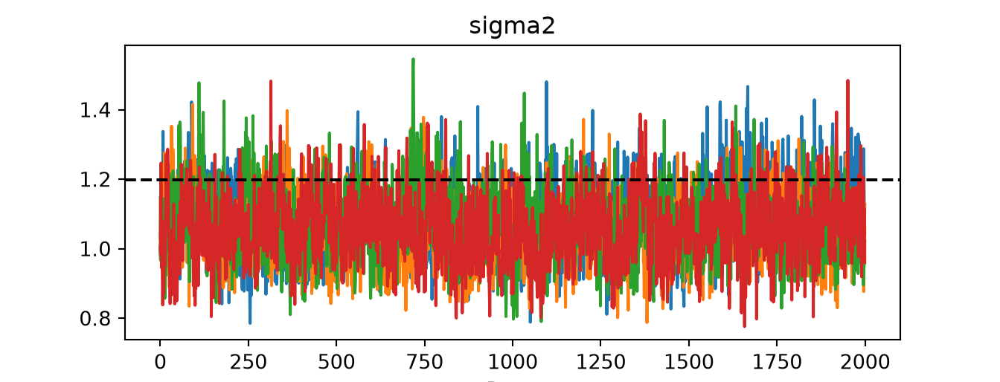
print("ESS: ", az.ess(idata))ESS: <xarray.DataTree 'posterior'>
Group: /posterior
Dimensions: ()
Data variables:
sigma2 float64 8B 602.5print("R-hat:", az.rhat(idata))R-hat: <xarray.DataTree 'posterior'>
Group: /posterior
Dimensions: ()
Data variables:
sigma2 float64 8B 1.009az.plot_autocorr(idata)plt.show()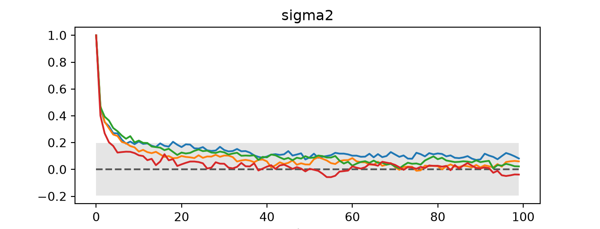
coda_array <- as.array(sigma2_coda_list)
dim(coda_array) <- c(nrow(coda_array), ncol(coda_array), 1)
dimnames(coda_array) <- list(
Iteration = paste0("iter", 1:num_mcmc),
Chain = paste0("chain", 1:num_chains),
Parameter = "sigma2_global"
)sigma2_chains = bart_model.global_var_samples.reshape(num_chains, num_mcmc)bayesplot::mcmc_hist_by_chain(
coda_array,
pars = "sigma2_global"
) +
ggplot2::labs(
title = "Global error scale posterior by chain",
x = expression(sigma^2)
) +
ggplot2::theme(
plot.title = ggplot2::element_text(hjust = 0.5)
) +
ggplot2::geom_vline(
xintercept = noise_sd^2,
color = "black",
linetype = "dashed",
size = 1
)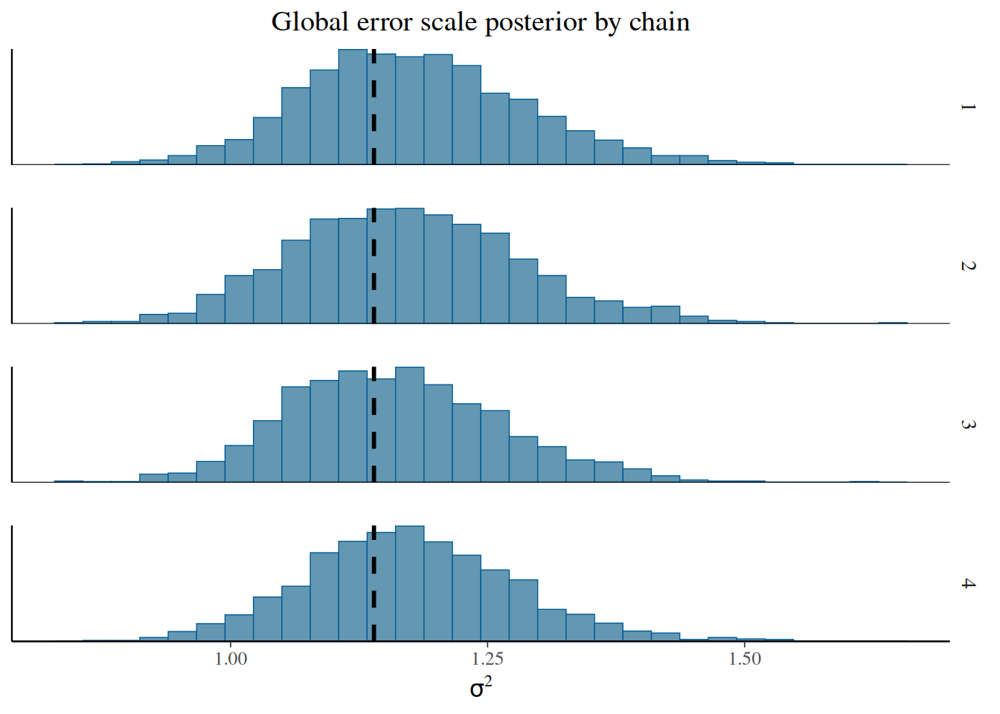
fig, axes = plt.subplots(1, num_chains, figsize=(12, 3), sharey=True)
for i, ax in enumerate(axes):
ax.hist(sigma2_chains[i], bins=30)
ax.axvline(noise_sd**2, color="black", linestyle="dashed", linewidth=1.5)
ax.set_title(f"Chain {i+1}")
ax.set_xlabel(r"$\sigma^2$")
fig.suptitle("Global error scale posterior by chain")
plt.tight_layout()
plt.show()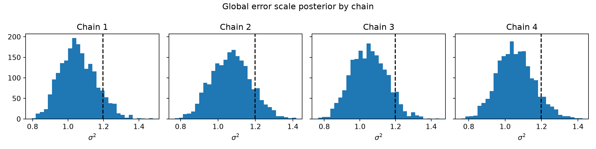
Sampling Multiple Chains in Parallel
While the above examples used sequential multi-chain sampling internally, it is also possible to run chains in parallel. In R, this is done via doParallel / foreach; in Python, via concurrent.futures.ProcessPoolExecutor. In both cases, each chain is serialized to JSON for cross-process communication, then combined into a single model via createBARTModelFromCombinedJsonString() (R) or BARTModel.from_json_string_list() (Python).
In order to run multiple parallel stochtree chains in R, a parallel backend must be registered. Note that we do not evaluate the cluster setup code below in order to interact nicely with GitHub Actions.
ncores <- parallel::detectCores()
cl <- makeCluster(ncores)
registerDoParallel(cl)# Worker function must be defined at module level for pickling
from concurrent.futures import ProcessPoolExecutor
def _run_bart_chain(args):
X_tr, lb_tr, y_tr, X_te, lb_te, num_burnin, num_mcmc, seed = args
from stochtree import BARTModel
m = BARTModel()
m.sample(
X_train=X_tr, leaf_basis_train=lb_tr, y_train=y_tr,
X_test=X_te, leaf_basis_test=lb_te,
num_gfr=0, num_burnin=num_burnin, num_mcmc=num_mcmc,
general_params={"num_threads": 1, "random_seed": seed},
mean_forest_params={"sample_sigma2_leaf": False},
)
return m.to_json(), m.y_hat_testnum_chains <- 4
num_gfr <- 0
num_burnin <- 100
num_mcmc <- 100num_chains = 4
num_gfr = 0
num_burnin = 100
num_mcmc = 100bart_model_outputs <- foreach(i = 1:num_chains) %dopar%
{
random_seed <- i
general_params <- list(sample_sigma2_global = T, random_seed = random_seed)
mean_forest_params <- list(sample_sigma2_leaf = F)
bart_model <- stochtree::bart(
X_train = X_train,
leaf_basis_train = leaf_basis_train,
y_train = y_train,
X_test = X_test,
leaf_basis_test = leaf_basis_test,
num_gfr = num_gfr,
num_burnin = num_burnin,
num_mcmc = num_mcmc,
general_params = general_params,
mean_forest_params = mean_forest_params
)
bart_model_string <- stochtree::saveBARTModelToJsonString(bart_model)
y_hat_test <- bart_model$y_hat_test
list(model = bart_model_string, yhat = y_hat_test)
}Warning: executing %dopar% sequentially: no parallel backend registered# Sequential loop — replace the loop body with ProcessPoolExecutor for true parallelism
bart_model_outputs = []
for i in range(num_chains):
m = BARTModel()
m.sample(
X_train=X_train, leaf_basis_train=leaf_basis_train, y_train=y_train,
X_test=X_test, leaf_basis_test=leaf_basis_test,
num_gfr=0, num_burnin=num_burnin, num_mcmc=num_mcmc,
general_params={"num_threads": 1, "sample_sigma2_global": True, "random_seed": i + 1},
mean_forest_params={"sample_sigma2_leaf": False},
)
bart_model_outputs.append({"model": m.to_json(), "yhat": m.y_hat_test})Close the parallel cluster (not evaluated here).
stopCluster(cl)# No explicit teardown required when using concurrent.futures context managerCombine the forests from each BART model into a single forest.
bart_model_strings <- list()
bart_model_yhats <- matrix(NA, nrow = length(y_test), ncol = num_chains)
for (i in 1:length(bart_model_outputs)) {
bart_model_strings[[i]] <- bart_model_outputs[[i]]$model
bart_model_yhats[, i] <- rowMeans(bart_model_outputs[[i]]$yhat)
}
combined_bart <- createBARTModelFromCombinedJsonString(bart_model_strings)bart_model_strings = [out["model"] for out in bart_model_outputs]
bart_model_yhats = np.column_stack([
out["yhat"].mean(axis=1) for out in bart_model_outputs
]) # shape: (n_test, num_chains)
combined_bart = BARTModel()
combined_bart.from_json_string_list(bart_model_strings)yhat_combined <- predict(combined_bart, X_test, leaf_basis_test)$y_hat# type="posterior" (default) returns the full n_test × (num_chains * num_mcmc) matrix
yhat_combined = combined_bart.predict(X=X_test, leaf_basis=leaf_basis_test, terms="y_hat")Compare average predictions from each chain to the original predictions and to the true \(y\) values.
par(mfrow = c(1, 2))
for (i in 1:num_chains) {
offset <- (i - 1) * num_mcmc
inds_start <- offset + 1
inds_end <- offset + num_mcmc
plot(
rowMeans(yhat_combined[, inds_start:inds_end]),
bart_model_yhats[, i],
xlab = "deserialized",
ylab = "original",
main = paste0("Chain ", i, "\nPredictions")
)
abline(0, 1, col = "red", lty = 3, lwd = 3)
}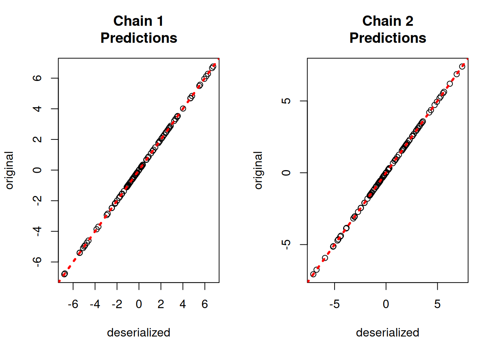
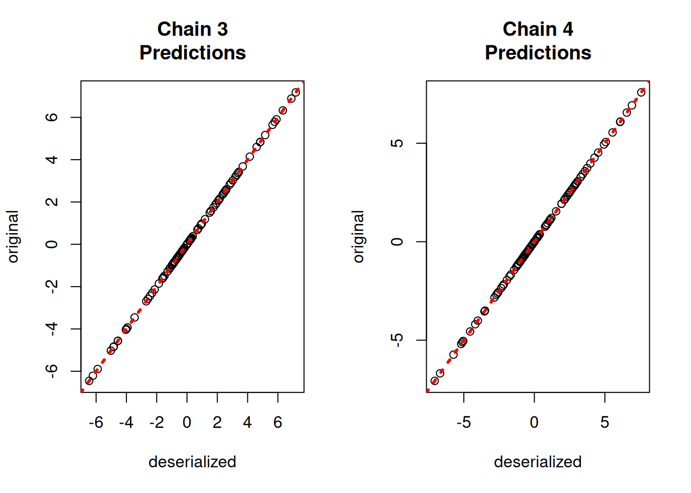
par(mfrow = c(1, 1))fig, axes = plt.subplots(2, 2, figsize=(8, 8))
for i, ax in enumerate(axes.flat):
chain_combined = yhat_combined[:, i * num_mcmc:(i + 1) * num_mcmc].mean(axis=1)
chain_orig = bart_model_yhats[:, i]
lo = min(chain_combined.min(), chain_orig.min())
hi = max(chain_combined.max(), chain_orig.max())
ax.scatter(chain_combined, chain_orig, alpha=0.4, s=10)
ax.plot([lo, hi], [lo, hi], color="red", linestyle="dashed", linewidth=1.5)
ax.set_xlabel("Deserialized"); ax.set_ylabel("Original")
ax.set_title(f"Chain {i+1} Predictions")
plt.tight_layout()
plt.show()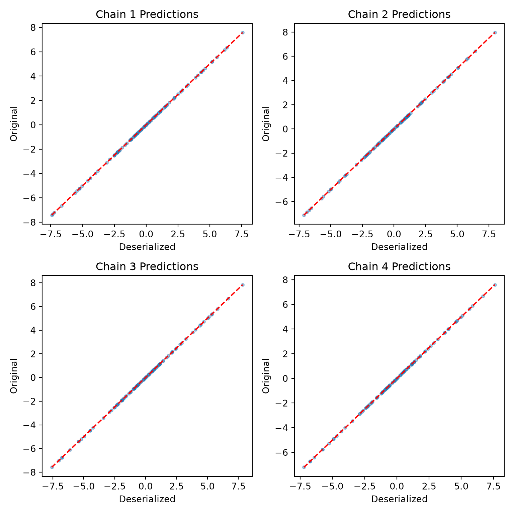
par(mfrow = c(1, 2))
for (i in 1:num_chains) {
offset <- (i - 1) * num_mcmc
inds_start <- offset + 1
inds_end <- offset + num_mcmc
plot(
rowMeans(yhat_combined[, inds_start:inds_end]),
y_test,
xlab = "predicted",
ylab = "actual",
main = paste0("Chain ", i, "\nPredictions")
)
abline(0, 1, col = "red", lty = 3, lwd = 3)
}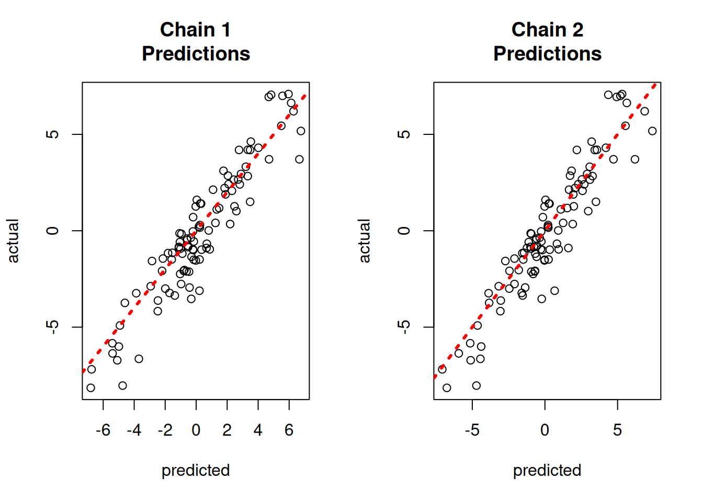
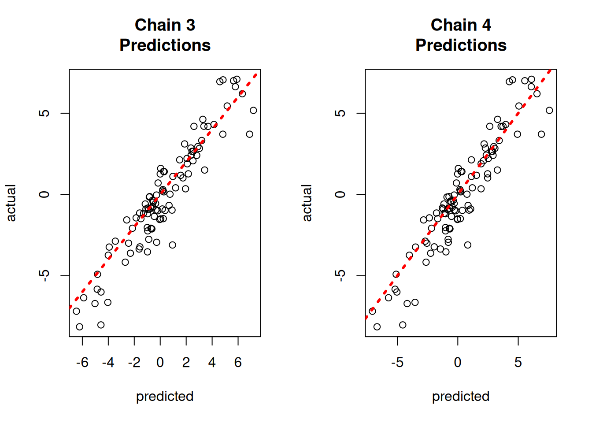
par(mfrow = c(1, 1))fig, axes = plt.subplots(2, 2, figsize=(8, 8))
for i, ax in enumerate(axes.flat):
chain_pred = yhat_combined[:, i * num_mcmc:(i + 1) * num_mcmc].mean(axis=1)
lo = min(chain_pred.min(), y_test.min())
hi = max(chain_pred.max(), y_test.max())
ax.scatter(chain_pred, y_test, alpha=0.4, s=10)
ax.plot([lo, hi], [lo, hi], color="red", linestyle="dashed", linewidth=1.5)
ax.set_xlabel("Predicted"); ax.set_ylabel("Actual")
ax.set_title(f"Chain {i+1} Predictions")
plt.tight_layout()
plt.show()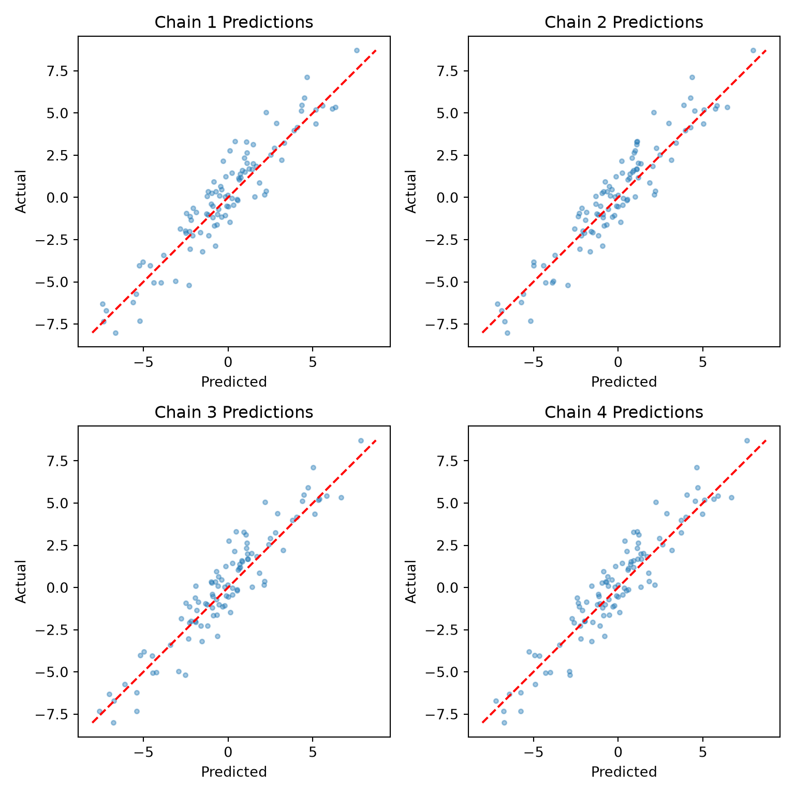
References
Chipman, Hugh A., Edward I. George, and Robert E. McCulloch. 2010. “BART: Bayesian additive regression trees.” The Annals of Applied Statistics 4 (1): 266–98. https://doi.org/10.1214/09-AOAS285.
He, Jingyu, and P Richard Hahn. 2023. “Stochastic Tree Ensembles for Regularized Nonlinear Regression.” Journal of the American Statistical Association 118 (541): 551–70.
Krantsevich, Nikolay, Jingyu He, and P Richard Hahn. 2023. “Stochastic Tree Ensembles for Estimating Heterogeneous Effects.” International Conference on Artificial Intelligence and Statistics, 6120–31.